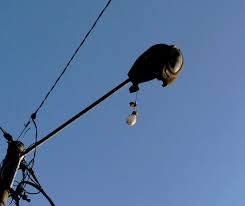

Laporan Terpopuler
 DKI Jakarta
DKI Jakarta
Halte Senen
Kerusakan Fasilitas Umum pada Halte Senen, atap bocor dan kursi rusak.
 Sumut
Sumut
Gatot Subroto
Jalan Rusak (berlobang) parah di Jl. Gatot Subroto, Medan.
 Sumut
Sumut
Lapangan Merdeka
Kerusakan pada lantai lapangan merdeka (pecah-pecah) membahayakan pelari.
Sumut
Taman Bunga Medan
Parit tersumbat sampah di area Taman Bunga menyebabkan bau tak sedap.
Sumsel
Jembatan Ampere
Kerusakan pada trotoar jembatan Ampere, paving block banyak yang lepas.
Sumut
Flyover Jamin Ginting
Lampu penerangan jalan mati total di sepanjang flyover saat malam hari.

Aceh
Banda Aceh
Lampu lalu lintas tidak berfungsi di persimpangan utama kota.
Sulut
Manado
Trotoar pecah dan berlubang di daerah Jalan Pierre Tendean.